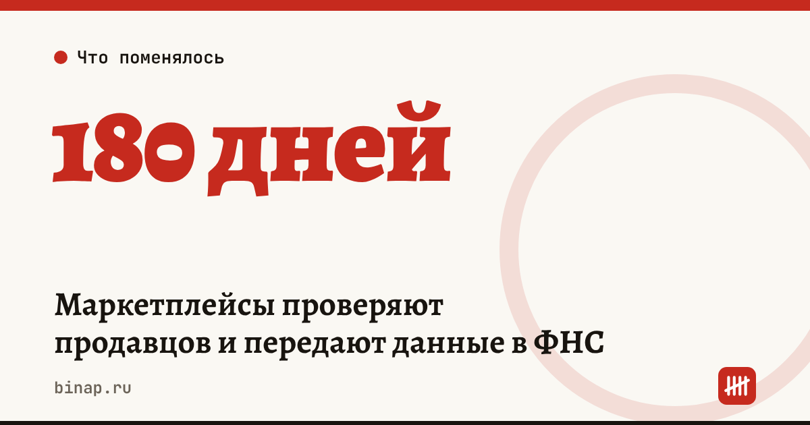

Маркетплейсы проверяют продавцов и передают данные в ФНС

С 1 октября 2026 года маркетплейс должен проверить продавца до того, как заключит с ним договор. Правила утвердило правительство (постановление от 20.06.2026 № 768). Если данные в кабинете площадки расходятся с ЕГРИП или ЕГРЮЛ, проверка может закончиться отказом, поэтому сверить их стоит заранее.
Коротко
- Площадка проверяет название, адрес, ИНН, ОГРН и КПП до договора; для ИП и самозанятых — свои наборы сведений.
- Через Госуслуги проверка занимает один календарный день, при отказе площадка называет причину.
- Действующих продавцов, по данным Клерка, перепроверят за 180 дней.
- Данные о договоре и акт сверки уходят в ФНС только с вашего согласия.
- Отдельно в Госдуме обсуждают законопроект, по которому ФНС сможет приостанавливать карточки продавца за неявку на допрос или непредставленные документы. Это пока проект.
Сроки, изменения и разборы для ИП и самозанятых — каждое утро в Telegram и MAX. Подпишитесь, чтобы не пропустить.
Что проверяют. Достоверность названия, адреса, ИНН, ОГРН и КПП компании. Для ИП и самозанятых — свои наборы сведений. Способ проверки площадка выбирает сама, для российских компаний и ИП это может быть вход через Госуслуги (ЕСИА).
Сроки. Через Госуслуги проверка занимает один календарный день с момента, как площадка получила ваши данные. Результат приходит в течение рабочего дня. Если отказали, площадка обязана назвать причину, а проверку можно пройти повторно.
Действующие продавцы. По данным Клерка, на их перепроверку площадкам дали 180 дней.
Обмен данными с ФНС (постановление от 20.06.2026 № 766). Только если вы дали согласие, площадка отправляет в налоговую: - сведения о договоре с вами: дату, номер, сроки, предмет; - сведения о вас, в том числе согласны ли вы на снижение цены за свой счёт; - акт сверки взаиморасчётов.
Отправить их нужно в течение 2 рабочих дней после согласия, изменения — в течение 3 рабочих дней.
Что сделать селлеру: 1. Откройте выписку из ЕГРИП или ЕГРЮЛ и сравните название, ИНН, ОГРН и адрес с данными в кабинете маркетплейса. Расхождение лучше исправить до проверки. 2. Проверьте, что вход на Госуслуги работает и учётная запись подтверждена. 3. Когда площадка попросит согласие на передачу данных в ФНС, прочитайте, что именно уйдёт в налоговую. Это обычные данные о договоре и сверке, но решение ваше. 4. Назначьте человека, который каждый день смотрит требования ФНС (личный кабинет налогоплательщика, оператор ЭДО) и сообщения площадки, и записывайте дату получения каждого требования.
Что проверить в кабинете площадки
| Что | Где сверить |
|---|---|
| Название ИП или компании | выписка ЕГРИП / ЕГРЮЛ |
| ИНН, ОГРН (ОГРНИП), КПП | выписка ЕГРИП / ЕГРЮЛ |
| Юридический адрес | выписка ЕГРЮЛ (для ИП — адрес регистрации) |
| Налоговый режим и ставка НДС | уведомление о переходе на режим, учётная политика |
| Банковские реквизиты для выплат | договор с банком, справка о счёте |
Законопроект о блокировке карточек
По данным блога на «Клерке» (04.11.2026), Госдума приняла в первом чтении законопроект № 617-9: налоговая сможет поручить площадке приостановить приём заказов и показ карточек продавца, если он не явился на допрос или не представил документы в срок. Площадка исполняет поручение за два дня, за неисполнение ей грозит штраф 100 000 ₽. Второе чтение запланировано на 19 ноября 2026 года, профильный комитет рекомендовал исключить механизм приостановки. Нормы о маркетплейсах, если закон примут, вступят в силу через девять месяцев после публикации. Это проект, не действующая норма.
Как ещё меняются отношения с маркетплейсами — в разборе «Закон о платформах с 1 октября». Если площадка задерживает деньги — инструкция что собрать и как посчитать проценты.
Частые вопросы
Что будет, если я не дам согласие на передачу данных в ФНС? Обмен данными по постановлению № 766 идёт только с согласия продавца. Последствия отказа для работы на конкретной площадке смотрите в её оферте.
Сколько длится проверка нового продавца? Через Госуслуги — один календарный день с момента, как площадка получила данные, результат приходит в течение рабочего дня.
Могут ли сейчас заблокировать карточки по требованию налоговой? По законопроекту № 617-9 — да, но это пока проект, принятый в первом чтении.